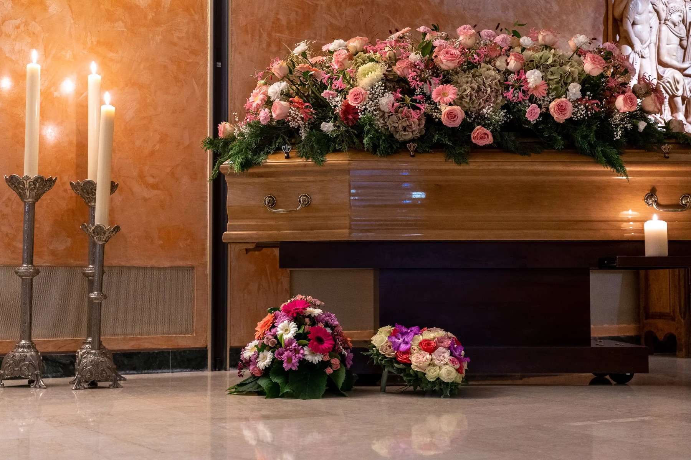

As nossas salas e a Capela de La Cluse
As nossas salas são personalizáveis e acessíveis 24 horas por dia, 7 dias por semana, através de um código.
Visitar as nossas salas
Serviços funerários em Genebra desde 1888
Em qualquer momento, os nossos assistentes funerários saberão aconselhá-lo
Os nossos produtos
Encontrará abaixo uma lista dos nossos produtos; não hesite em contactar um dos nossos agentes funerários.
A nossa equipa orienta-o de imediato nos primeiros passos, sem compromisso.
Bastam alguns minutos. Não é pedido qualquer dado pessoal nesta fase.